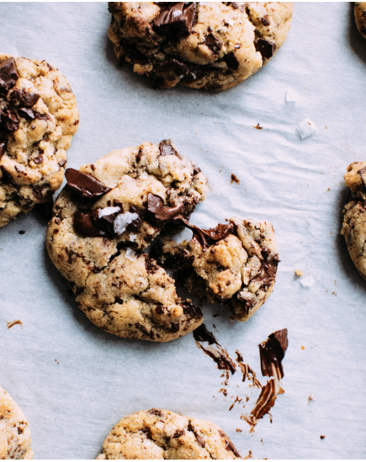

Sobre la receta

Estas galletas son crujientes por fuera y suaves por dentro. Son perfectas para acompañar con leche o café.
Ingredientes
- 1 ½ tazas de harina
- ½ taza de mantequilla
- ½ taza de azúcar
- 1 huevo
- 1 cucharadita de vainilla
- ¾ de taza de chispas de chocolate
Preparación
- Precalienta el horno a 180 °C.
- Mezcla la mantequilla y el azúcar.
- Agrega el huevo y la vainilla.
- Agrega la harina y las chispas de chocolate.
- Forma pequeñas bolitas de masa.
- Hornea de 10 a 12 minutos.
Tip: deja enfriar las galletas antes de comerlas.
¡Disfruta tus galletas!